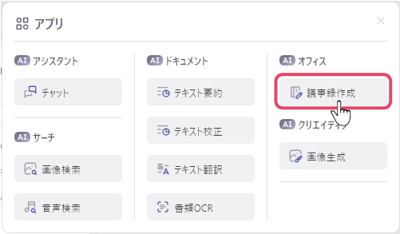
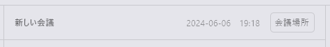
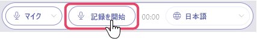
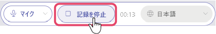
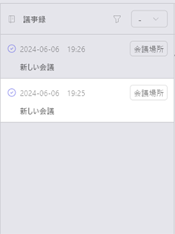
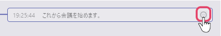
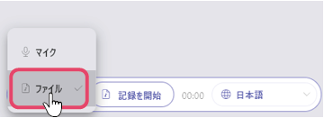
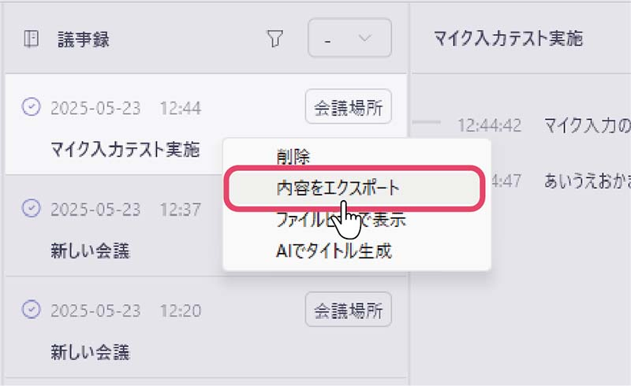
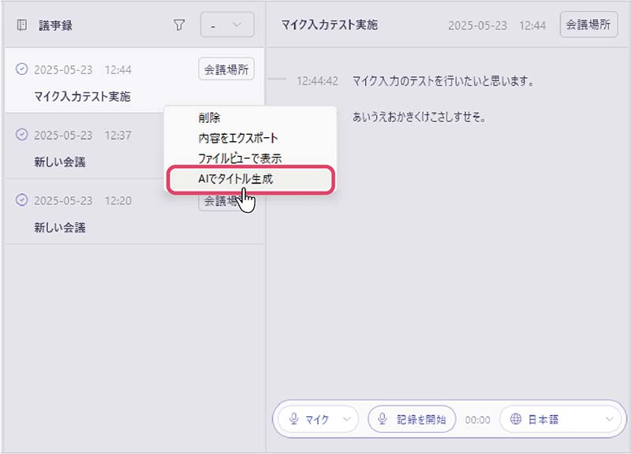

議事録を取る
音声認識AIによって、手を動かすことなく議事録を取ることができます。
- 画面左上のアプリメニューから「議事録作成」をクリックし、議事録画面を開きます。
 - 画面右上の「会議場所」に会議場所を入力します。会議名を変更することもできます。
 - 画面下部の「記録を開始」ボタンをクリックし、議事録の記録を開始します。
 - 音声認識に必要なAIモデルのダウンロードがお済みでない場合は、ダウンロードが開始されます。 ダウンロード完了後より利用可能となります。
- 記録を終えるタイミングで、画面下部の「記録を停止」ボタンをクリックし、議事録を保存します。

記録した議事録を確認する
議事録画面の左側に並ぶ議事録をクリックすると、記録した議事録を見ることができます。

記録された文の右側にあるボタンをクリックすると、文の訂正ができます。

また、画面下部の「記録を開始」ボタンをクリックすることで、再度議事録を記録することができます。
音声ファイルから議事録を作成する
クエリバーの「マイク」をクリックし、「ファイル」に変更した後に「記録を開始」を選択することで、音声ファイルから議事録を作成することができます。 
対応形式
議事録機能で標準で読み込めるファイルはwavファイルのみとなります。
別途、ffmpegをインストールすることで、mp3とmp4の読み込みが可能となります。
Windowsの場合、環境変数のPATHの通った場所、もしくは下記のフォルダにffmpeg.exeを配置してください。
/Users/[UserName]/Documents(*)/ailia DX Insight/ffmpeg/
macOSの場合、環境変数のPATHの通った場所、もしくは下記のフォルダのいずれかにffmpegを配置してください。
~/Documents(*)/ailia DX Insight/ffmpeg/
/usr/local/bin/
/opt/homebrew/bin/
/opt/local/bin/
議事録を書き出す
議事録画面の左側に並ぶ議事録を右クリックし、「内容をエクスポート」を選択すると、議事録をtxt形式のファイルとして書き出すことができます。

AIで議事録のタイトルを生成する
議事録を右クリックし、「AIでタイトル生成」を選択する事で、AIを使用して自動で議事録にタイトルを生成することができます。
